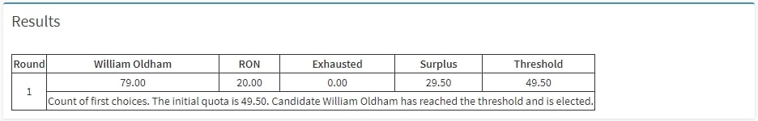
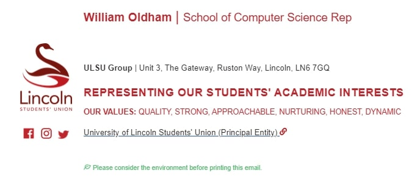

Hello! 👋
My name is Will and this is the first post I will make on this blog as the school rep for Computer Science 2021/2022!
Last year, Garry did an excellent post on his first 30 days as a school rep. Since the process has changed in some aspects, I thought I would do the same!
My hope is that this outline of events will provide transparency into the process as well as assisting next year's rep in settling in.
5th February
This was my first contact about applying for the position of school rep. The current VP of Education at the time (Georgia Petts) sent me an email saying that I had been nominated as a potential candidate and to ask if I had any questions about the role.
This came as a surprise to me since I had not spoken to anyone about the role before! Georgia sent me over some information regarding the role and what it would entail to help with deciding whether I wanted to go ahead with it.
The Lincoln SU Academic Representation page was helpful to know what the different volunteer officer (VO) roles were and what the responsibilities were.
1st March
After just under a month since the position was mentioned to me, I decided to strike up a conversation with the previous year's school rep: Garry Clawson
Garry was very gracious in providing lots of detail about the role and what he had done over the past year. This was particularly helpful in deciding whether the role was something I wanted to put myself forward for.
9th March
Based off of all the information I had been given by Georgia and Garry, I decided to submit my nomination for the role of school rep. As part of this, I had to provide a manifesto and an image of myself to be posted onto the SU website. To view my manifesto, click here.
{kind=link}
Due to an error in the SU website, I was emailed in the same day by the elections team to ask for a blurb. In the words of the SU, the blurb is "up to 100 characters only and is like a ‘slogan’ for your campaign". I decided my blurb would be:
Ensuring that every SoCS student voice has the chance to be heard through transparent and consistent communication
15th - 19th March
Election week!
During this week, I was invited to a Microsoft Teams group and a meeting which all the applicants for both the student leader and volunteer officer roles were in. This meeting was to outline the rules for running an election campaign and served as an introduction for everyone!
It was in this meeting I found out that I was the only candidate for the position of school rep. However, there is always the choice of RON (Re-Open Nominations) to be voted for as well.
19th March - On the Friday of the week at 4pm, the results were released! I had been elected into the position with 79 votes:
1st April
This was the day I received the first contact about the role from the SU. The email was from someone called Liz Wylie-Smy who is the "Academic Representation Coordinator" within the SU.
The email was mainly an introduction to Liz and a quick introduction to what would come next.
One of the key points in this email was that we had not started the role yet so any queries should be directed to the current school rep until July.
April - June
For all of April through June, nothing happened! Due to the role starting in July, there was no need for any communication in the mean time so it was a waiting game!1st July
This is where everything kicked off!
All VOs received a particularly long and detailed email from Shanna Limm who is the "Democracy and Governance Manager" within the SU. The email contained a large amount of information about our new role and also a couple of points I would need to action. The key points are as follows:
- The "term of office" for the role starts on the 1st July 2021 and finishes on the 30th June 2022.
- There will be a variety of training that we should attend or complete. This includes 4 virtual/in-person training days, 2 optional drop-in sessions to ask the student leaders questions and a deadline for online e-training we have to complete.
- One of the sessions we are invited to is a 2 day residential trip (Transport, accommodation and catering all provided for) for all VOs which will include a variety of difference exercises for training, team building and overviewing the Student Leader plans. Dietary requirements were asked for so catering could be planned accordingly.
- I was asked to provide a photo and a short biography to go onto the SUs website.
- I was also asked for my preferred name and size for my school rep hoodie.
One of the things I had to complete before I could assume the role was online e-learning that could be completed on your own time. This e-learning consisted of 18 separate modules that all needed to be completed to both gain access to the SU gmail account and also be able to do the role correctly. The training was split into 4 categories and was as follows:
| Module | Category |
|---|---|
| Your SU | Core Training |
| Students' Unions, Democracy and Governance | Core Training |
| Skills Log | Core Training |
| Safeguarding Training | Core Training |
| Health & Safety | Core Training |
| GDPR Training | Core Training |
| Accountability | Volunteer Officer Training |
| Leading & Supporting | Volunteer Officer Training |
| Utilitising Feedback | Volunteer Officer Training |
| Student Disciplinaries & Complaints | Volunteer Officer Training |
| Marketing and Social Media | Volunteer Officer Training |
| Funding Regulations | Volunteer Officer Training |
| Events & Trips | Volunteer Officer Training |
| EDI & Unconscious Bias | Volunteer Officer Training |
| Rep Dashboard Training | Academic Representative Core Training |
| Coursemate Training | Academic Representative Core Training |
| School Rep Training | School Rep Training |
Completing the training did not take a long time and I was able to complete the training in about 5 hours cumulatively. The speed I was able to complete it was also probably due to the fact I had completed some similar training for being part of a society committee last year.
6th July
A further email about training was received from Liz. This email had information on the rep's dashboard which allows me to view all the course reps, complete officer reports and other actions.
The email also emphasised the deadline of 1st August for e-learning completion. This was of no concern to me as I had completed the training.
9th July
After all the training had been processed, I was granted access to the computingrep@lincolnsu.com gmail account where I would receive all of my further information.
16th July
The student leader responsible for all of the senior reps - Talia Adams (VP of Education) - sent all senior reps an introduction email welcoming everyone into the role.
19th July
I received an email inviting me to friend Liz and Talia on Facebook so that I could be added to the senior rep Facebook group. This group is designed to be a digital noticeboard for all the senior reps!
An option was provided to have all noticeboard information sent to your email instead of looking at Facebook. I chose for this to be the case for me so that I wouldn't be at risk of missing information - everything would come into my email!
It was also requested on the 19th to create the Instagram account (ULSUCompSci_Rep) with my rep email and a password given to me. We were told to keep the same password so that the marketing department could access the account if need be.
Additionally, we were given the school rep profile picture frame to indicate from our profile picture that we are a rep. You can see my profile picture below:

20th July
On this day, Liz sent through a todo list of everything that needs to be completed as part of becoming a rep before the 1st August. This was appreciated as there had been a large number of emails all with action items attached. Upon emailing Liz, she confirmed I had completed all of the items!
Click here to view the complete list
{kind=link}
21st July
A "who's who" list of all of the senior reps was circulated. I found this quite handy to make sure I knew who was who - especially in the college of science.
Click here to view the who's who list
22nd July
As a final touch to our social media presence online, we were sent an email signature template which we could fill in our name and role and use on of our SU communications! My one is below:
Now - 1st August
That all leads to now on the 1st August! The one other thing I have been doing for the duration of July has been redesigning the SoCS Rep website!
That's not to say there was anything wrong with the previous design! I am simply putting my own spin on the site as well as making sure it is up to date for the new year.
I hope this has been useful to give an insight into the process of becoming a school rep!
If you have any questions, please send me an email at computingrep@lincolnsu.com! 😊